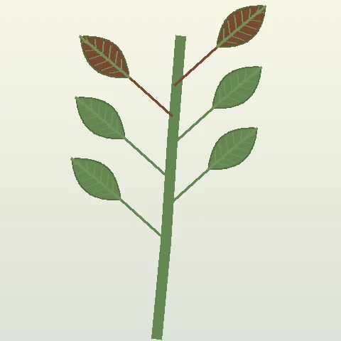

Shoot tip dieback
Dieback from shoot tips
This is one possible explanation. Compare the signs below with those on your plant.

What to look for
Compare exposed and sheltered shoots. Check whether terminal buds are brown while lower buds remain alive.
Possible causes and next steps
Frost, drying winds and shoot infections can damage tips. Note recent weather and locate live buds before deciding where to prune.